Ingelheim
Ingelheim (am Rhein) - Kaiserpfalz - Letztes Update 08.09.2025
Besuch in Ingelheim am 29.04.2017 / Beitrag eingefügt am 05.06.2017 / ergänzt um "Das Volk der Rus" am 08.09.2017
Literatur Tipp:
Auf den Spuren Karls des Grossen in Ingelheim. Entdeckungen - Deutungen - Wandlungen, Holger Grewe (Hg.), Michael Imhof Verlag, 2014 (Begleitband zum Karlsjahr 2014 der Stadt Ingelheim am Rhein), 19,95 .
Historischer Rundweg durch das Kaiserpfalzgebiet - Kaiserpfalz Ingelheim, Infobroschüre, Stadt Ingelheim am Rhein - Forschungsstelle Kaiserpfalz, kostenfrei beim Museumsbesuch erhältlich
Internet-Infos:
Kaiserpfalz App - Die Kaiserpfalz-App ist der ideale Begleiter bei einem Besuch der mittelalterlichen Palastruine in Ingelheim. Sie ergänzt als digitaler Führer die Informationen im Rundwegheft und die Beschilderung im Kaiserpfalzgebiet mit Hörtexten, Bildergalerien und digitalen Rekonstruktionen. Die Kaiserpfalz-App ist im AppStore und im Play Store kostenlos erhältlich.
Einhard der Biograph Karls des Großen schrieb:
...Auch begann Karl mit dem Bau von zwei herrlichen Palästen: Der eine war nicht weit von Mainz in der Nähe seines Gutes Ingelheim, der andere in Nimwegen am Flusse Waal, der südlich der Bataverinsel fließt
Einhardi Vita Karoli Magni, cap. 17 - Deutsche Übersetzung - Otto Abel - 1850
Zum Jahr 774 ist der erste Aufenthalt Karls des Großen (*2.4.747 oder 748, Geburtsort unbekannt - 28.01.814 in Achen) in Ingelheim durch die sogenannten Fränkischen Reichsannalen überliefert. Die älteste Fassung wurde wohl spätestens 15 Jahre später im Kloster Lorsch niedergeschrieben.
Dieselben Reichsannalen berichten auch, dass Karl Weihnachten 787 und Ostern 788 in Ingelheim gefeiert habe. Direkt danach hat Karl wohl im Juni 788 dem bayerischen Herzog Tassilo III. entmachtet. Diese Berichte bezeugen einen relativ langen Aufenthalt von Karl vor Ort.
Nur in der Vita Ludwig der Fromme (Sohn Karl des Großen), aus der Feder des sogenannten Astronomus, wird über ein Zusammentreffen von Karl des Großen und seinem Sohn Ludwig irgendwann zwischen März und August 791 berichtet.
Der letzte Besuch Karl in Ingelheim im August 807 dagegen ist zweifelsfrei belegt, da sich ein am 07.08.807 beurkundetes Diplom im Original bewahrt hat.
Einer der Söhne von Karl des Großen war Ludwig der Fromme (*16.04.778 Pfalz Chasseneuil (bei Poitiers) - 20.06.840 auf einer Rheininsel nahe Ingelheim). Er wurde am 11. September 813 in Aachen von seinem Vater, ohne Mitwirkung eines Papstes, zum Mitkaiser gekrönt. Nach dem Tod Karl des Großen wird Ludwig am 27. Februar 814 feierlich in Aachen empfangen und tritt die Nachfolge seines Vaters an.
Neben zahlreichen anderen Aufenthalten in Ingelheim empfing er in der dortigen Kaiserpfalz im Juli 817 eine Delegation von byzantinischen Gesandten.
In Auseinandersetzungen mit seinen eigenen Söhnen wurde er zweimal vorübergehend abgesetzt (830, 833/34). Es gelang Ludwig der Fromme nicht, das Reich zu festigen drei Jahre nach seinem Tod wurde das Frankenreich im Vertrag von Verdun (10. August 843) unter seinen drei überlebenden Söhnen aufgeteilt. Lothar als ältester erhielt die Kaiserwürde sowie das später als Mittelreich bezeichnete "Lotharii Regnum", das sich von der Nordsee bis nach Italien erstreckte; Karl der Kahle bekam das Westfrankenreich, aus dem später Frankreich hervorgehen sollte und Ludwig der Deutsche erhielt das Ostfrankenreich, den Vorgänger des heutigen Deutschland.
Am 20. Juni 840 starb Ludwig der Fromme als er sich bereits schwer erkrankt auf dem Rückweg zur Ingelheimer Pfalz befand, unmittelbar vor seinem Ziel, auf einer Rheininsel. Danach verlor die Pfalz ihre Rolle als zentraler Ort der Herrschaft vermutlich schlagartig. Die dramatisch zunehmende Gefahr durch äußere Bedrohungen (Wikingerüberfälle) verlieh den befestigten Pfalzen natürlich entscheidende Vorzüge. Ingelheim, das nicht angegriffen und zerstört wurde, stand als vermutlich schwach befestigte Anlage offenbar nur in der zweiten Reihe.
Der dänische Herrscher Harald "Klak" Halvdansson (*785 - 846) war von 812 bis 814 und 819 bis 827 König von Jütland (Haithabu) und möglicherweise auch anderen Teilen Dänemarks. Er war in heftige Auseinandersetzungen mit den Söhnen Gudfreds verstrickt, der 810 ermordet worden war.
Harald Klak weilte zur Synode 826 in Ingelheim und war Gast von Ludwig der Fromme.
Harald wurde bereits 814 ein Ingelheim von Ludwig. Dessen Hilfe hatte er im Kampf gegen seine Feinde erbeten. Daraufhin fielen auch dessen Truppen 815 in Jütland ein, was ihm kurzfristig zu neuerlicher Macht in Jütland um Haithabu herum verhalf. Bereits 817 wurde er erneut vertrieben.
Da das friesische Küstengebiet ein Schwachpunkt in der Grenzverteidigung des Fränkischen Reichs und beliebtes und häufiges Ziel von Wikingerüberfällen war, lud Kaiser Ludwig Harald, dessen Position in Dänemark inzwischen sehr geschwächt war, 826 zu Verhandlungen über die Sicherung Frieslands ein. Auf einer Reichsversammlung und Synode in Ingelheim wurde Harald (Herioldus) von Ludwig mit großem Pomp in der dortigen Kaiserpfalz empfangen. Am 24. Juni 826, der Festtag des hl. Johannes des Täufers, ließ er sich zusammen mit seiner Frau, seinem Sohn Gottfried und seinem etwa 400 Personen großen Gefolge im Stift St. Alban vor Mainz taufen. Ludwig wurde Haralds Pate und belehnte ihn mit der friesischen Grafschaft Rüstringen. Damit war Harald wohl der erste Däne, der fränkisches Gebiet zu Lehen erhielt. Als Gegenleistung verpflichtete er sich, die friesische Küste gegen zukünftige Wikinger-Überfälle zu verteidigen.
Auf seiner Rückreise 827 begleiteten ihn der bisherige Vorsteher der Klosterschule von Corvey und spätere Erzbischof von Hamburg-Bremen, Ansgar, und eine Gruppe von Mönchen, die die nordische Mission in Dänemark fortsetzen sollten. Harald nannte sich nunmehr König von Rüstringen und Jütland und wurde Mitregent in Stormarn. Ob er allerdings dänischen Boden tatsächlich noch einmal betrat, ist nicht gesichert. Wenn ja, so wurde er jedenfalls noch im gleichen Jahr von Horik I. endgültig aus Dänemark vertrieben. Der Grenzkrieg mit seinem Rivalen dauerte allerdings noch bis 829 an. Haralds Taufe hatte weder die Ausbreitung des Christentums gesichert noch seinen Herrschaftsanspruch gestärkt; sie mag sogar sein Scheitern in Dänemark besiegelt haben.
Dr. Egon Wamers (*04.01.1952, Frühmittelalter-Archäologe) führt in seiner Abhandlung König im Grenzland, Neue Analyse des Bootkammergrabes in Heiðaby (1994) und im Ausstellungskatalog Odin, Thor und Freyja (2017 - pdf-Download) aus, dass vermutlich Harald Klak im Bootkammergrab von Haithabu beigesetzt wurde. Diese ungewöhnliche Schiffsbestattung eines Königs mit zwei Gefolgsleuten, alle mit karolingischen Schwertern und weiteren fränkischen Beigaben, weist skandinavische und kontinentale Eigenheiten auf.
Die drei gefundenen karolingischen Schwerter wurden in das späte 8. oder frühe 9. Jahrhundert datiert, während das Grab selbst erst um 840/850 angelegt wurde.

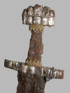

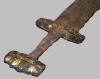

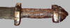
Das Bootkammergrab von Haithabu, das 1908 ausgegraben wurde, liegt ca. 250 m südwestlich des durch den Halbkreiswall führenden Südtores.
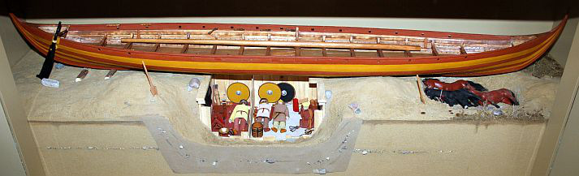
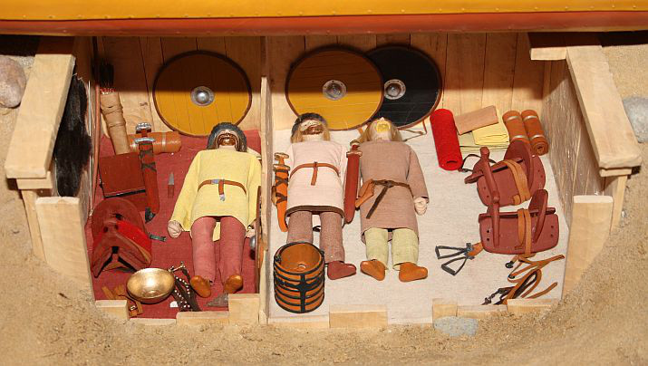
Modell des Bootkammergrabes aus dem Wikinger-Museum Haithabu
Mit einer weiteren, welthistorischen Besonderheit kann Ingelheim zudem aufwarten:
"Die älteste sicher datierte Kunde über das Volk Rus' liegt mit einer Erwähnung in den Annalen von St. Bertin aus dem Jahr 839 vor, in der von einer Gesandtschaft dieses "Volkes" (gens) berichtet wird, das sich "Rhos" nenne; diese habe sich an den fränkischen Kaiser Ludwig den Frommen (814-840) gewandt, der sie dann am 18. Mai in der Pfalz Ingelheim am mittleren Rhein empfangen hat." (Quelle: Die Rus' im 9.-10. Jahrhundert, Hsg.: Nikolaj A. Makarov, Studien zur Siedlungsgeschichte und Archäologie der Ostseegebiete, Band 14, S. 22).
In den Annalen von St. Bertin heißt es:
"Es kamen auch Gesandte der Griechen, von Kaiser Theophilus geschickt, und zwar Theodosius, Bischof und Metropolitan von Chalcedon, und der Schwertträger Theophanius, die neben des Kaisers würdigen Geschenken einen Brief überbrachten; sie empfing der Kaiser am achtzehnten Mai zu Ingelheim ehrenvoll. Ihre Gesandtschaft betraf aber die Bestätigung eines Vertrags über Frieden, ewige Freundschaft und Liebe zwischen beiden Kaisern und ihren Untertanen..."
Dann heisst es weiter:
"Mit ihnen schickte er auch einige Männer, die sich, d.h. das Volk, dem sie angehörten, Rhos nannten; ihr König, Chagan mit Namen, hatte sie, wie sie sagten, an ihn aus Freundschaft geschickt; und er bat in dem erwähnten Brief darum, daß sie durch des Kaisers Güte Erlaubnis und Unterstützung bekommen könnten, ohne Gefahr durch sein Reich heimzukehren, da sie die Straßen, auf denen sie zu ihm nach Constantinopel gekommen waren, durch barbarische und furchtbar wilde Völker geführt hatten und er nicht wollte, daß sie diese auf dem Heimweg benutzten, damit sie sich keiner Gefahr aussetzten. Bei einer genaueren Nachforschung nach dem Grund ihrer Reise erfuhr der Kaiser, daß sie dem Volke der Sueonen angehörten; und da es ihm schien, als seien sie eher Kundschafter in seinem und unserem Reiche als Friedensgesandte, hielt er dafür, sie so lange bei sich zu behalten, bis man wahrheitsgetreu feststellen könne, ob sie ehrlich gekommen seien oder nicht. Dies teilte er dem Theophilus alsbald durch dessen Gesandte in einem Briefe mit, auch daß er jene Männer aus Freundschaft für ihn gern aufgenommen habe, und dass sie, wenn sie sich als zuverlässig erwiesen und sich Gelegenheit biete, ohne Gefahr in ihr Vaterland zurückzukehren, mit seiner Unterstützung nach Hause entlassen, andernfalls zusammen mit unseren Gesandten an ihn zurückgeschickt werden würden, damit er selbst entscheide, was mit solchen geschehen solle".
Auszug aus: Quellen zur karolingischen Reichsgeschichte, Zweiter Teil, Jahrbücher von St. Bertin, Ausgabe von 1966, S. 43 ff.
Siehe auch: Gesandte der schwedischen "Rhos" ("Russen") mit Byzantinern 839 in Ingelheim
Im heutigen Ingelheim finden sich auch heute noch vielfältige Spuren der ehemaligen Pfalz Karl des Großen. Eine Führung durch das Kaiserpfalzgebiet kann ich nur empfehlen. Diese findet April bis Oktober jeweils am 1. und 3. Samstag des Monats, ab dem Besucherzentrum im Museum bei der Kaiserpfalz, Francois-Lachenal-Platz 5, statt. Die Teilnahme kostet 10,00 pro Person. Neben dem Museumsbesuch führt die Tour durch das Saalgebiet, zum Heidesheimer Tor, zur Aula Regia und zur Saalkirche.
Im Zuge der Stadtsanierung ist im Gebiet der Kaiserpfalz zudem über die Straßenpflasterung in vielen Bereichen der ehemalige Grundriss der Pfalz sichtbar gemacht worden.
Der 145m x 110m große Kernbezirk der Pfalz wurde auf einer Hangterrasse in drei Kilometer Entfernung zum südlichen Rheinufer angelegt.
Die Aula regia, die Palastaula, ist der Bereich, der heute als die "Pfalz der Karolinger" bezeichnet wird. Das Bauwerk ist 16,5 m breit und 40,5 m lang. Es ist ein großer einschiffiger Rechtecksaal mit dem Hauptzugang von der Nordseite her. Am gegenüberliegenden Saalende liegt die Thronapsis, die über 3 Stufen erreichbar ist. Da am linken Eckquader der Apsis ein Kämpferstein in Originallage erhalten ist, lässt sich die ehemalige Traufhöhe bei ca. 13 m und die Firsthöhe mit ca. 19 m errechnen. Leider berichtet keine Quelle über die Ereignisse in der Aula regia, aber hier dürfte Harald Klak von Kaiser Ludwig der Fromme festlich empfangen worden sein.
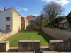 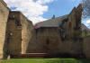 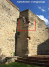 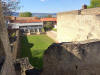


In der Ära "Pfalz der Ottonen" gab es in der Kaiserpfalz aufwändige Renovierungen und bauliche Erweiterungen. Die Saalkirche ist der wichtigste Schwerpunkt der damaligen Baumaßnahmen. Im Außenbereich der ehemaligen Pfalzkirche sind die historischen Teile (rot) von den jüngeren Ergänzungen (gelb) farblich abgesetzt. Im Vordergrund des u.a. Fotos ist der Grundriss des nördlich gelegenen karolingischen Vorgängerbaus, der durch archäologische Grabungen im Jahr 2004 lokalisiert werden konnte, über Pflastermarkierungen wiedergegeben.

Im heute ausgewiesenen Bereich "Pfalz der Staufer" ist das "Heidesheimer Tor" ein eindrucksvolles Bauwerk. Im 12. Jahrhundert, in der Epoche der Staufer, erfuhr die Kaiserpfalz nämlich umfassende Um- und Ausbauten (Eine Wehrmauer, Wehrtürme, wassergefüllter Burggraben).
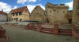 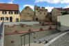 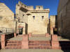 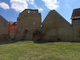


Ebenfalls staufisch ist der Nordflügel, der heute am Parkplatz zum nördlichen Eingangsbereich des Kaiserpfalzgebiet liegt. Dort findet sich auch dieses Bronzetastmodell des Künstlers Egbert Broerken, das 2014 aufgestellt wurde und u.a. den Bauzustand der Kaiserpfalz um 800 zeigt.
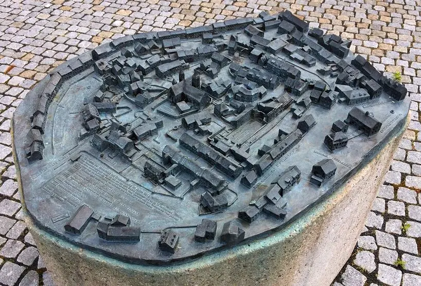
Eigenes Foto vom 29.04.2017
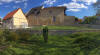 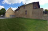 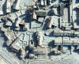


Ein Modell der Pfalz Ingelheim


Die Kaiserpfalz Ingelheim wurde in der Ausstellung "Odin, Thor und Freyja" in Frankfurt am Main mit einem neuen Rekonstruktionsmodell präsentiert, das aufgrund seiner leichten Transportfähigkeit speziell für den Einsatz in Sonderausstellungen außerhalb Ingelheims geeignet ist. Es besteht aus dem hoch belastbaren Werkstoff Necuron und wurde per Computermodell und Präzisionsfräse produziert. Das Modell wurde erst Anfang 2017 von der Forschungsstelle Kaiserpfalz fertig gestellt und war in der Frankfurter Ausstellung erstmals im Einsatz.
Aarhus - Momu (Moesgaard Museum)


Im "MOMU" Museum in Århus/Dänemark finden sich innerhalb der dortigen permanenten Wikingerausstellung auch zum Thema "Ingelheim" einige Ausstellungsstücke:

Bei seinem Aufenthalt anlässlich der Universalsynode in Ingelheim, die am 7. Juni 948 begann, könnte der Bischof von Århus, Reginbrand, solch eine Münze des Kaiser Ludwig der Frommen gesehen haben. Es waren aus dem dänischen Reich u.a. auch die Bischöfe Leofdag von Ribe und Hored von Schleswig anwesend. Diese Synode war eine der wichtigsten Versammlungen, die in Ingelheim stattfanden und einer der Höhepunkte in der Bedeutung Ingelheims als eines der politischen Zentren des Reiches.

Das Triumphkreuz von Åby, Jütland, um 1100, aus Eichenholz, Kupferlegierung, vergoldet, Höhe 59,8 cm - Kopie. Das Original stammt aus der Åby Kirche bei Århus (ca. 11 km nordwestlich des Momu) und befindet sich seit 1870 im Nationalmuseum in Kopenhagen (NM II D629). Es handelt sich um das älteste Kruzifix in Dänemark. Die Darstellung des Gekreuzigten mit einer Königskrone findet sich nur auf nordischen Kruzifixe.

Eine Nachbildung des Throns aus der Pfalzkapelle, des heutigen Doms, in Aachen. Es handelt sich um einen um 790 von Karls dem Großen in Auftrag gegebenen Thron/-stuhl. Der Stuhl selbst besteht aus vier mit bronzenen Klammern zusammengehaltenen Mamorplatten, die nach neureren Untersuchungen, ebenso wie die Stufen um 800 der Grabeskirche in Jerusalem entnommen wurden. Auf einer der seitlichen Stuhlplatten findet sich die Ritzung eines antiken Mühlespiels. Auf der rückwärtigen Platte findet sich die Ritzung einer Kreuzigungsszene. Die Platten wurden wohl schon zuvor mehrfach verbaut, bevor sie in Aachen ihren festen Platz fanden.
Zum ersten Mal schriftlich erwähnt wird ein Thron anlässlich der Krönung König Ottos I. im Jahr 936. Von da an mussten die Nachfolger Karls des Großen auf dem Thron gesessen haben, um ihren Herrschaftsanspruch zu legitimieren. Bis 1531 wurden 30 Könige in Aachen gekrönt.
(0:35 Minuten) - Der Königsthron
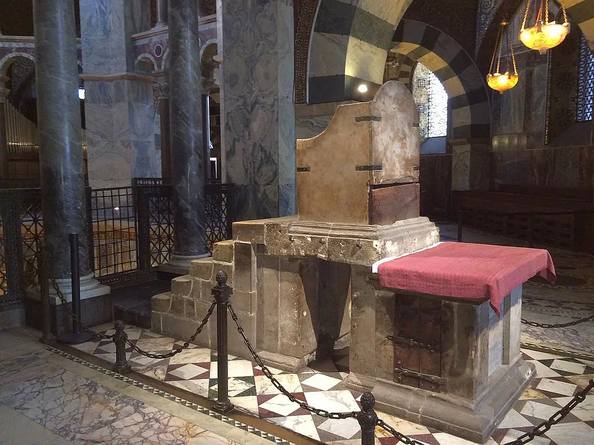
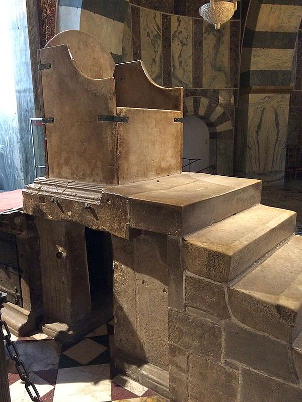
Eigene Aufnahmen 19.02.2015
Bereits 1544 beschrieb der in Ingelheim geborene Universalgelehrte Sebastian Münster (*20.01.1488 - 26.05.1552) in seinem Werk Cosmographia den Zustand des Saalgebiets in Bild und Wort. Diese von ihm geschaffene Abbildung ist die früheste erhaltene bildliche Darstellung der Kaiserpfalz Ingelheim.
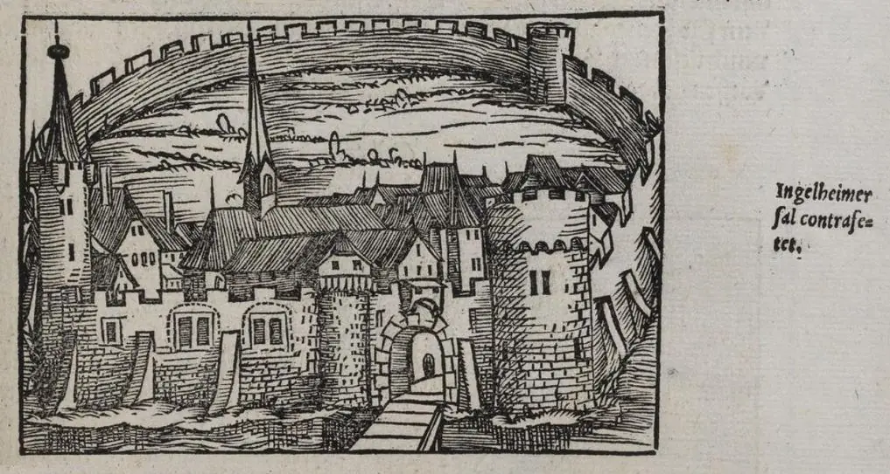
Lizenz: Public DomainIn der Ausgabe aus dem Jahr 1628 sieht der Holzschnitt dann so aus - Seite 876:
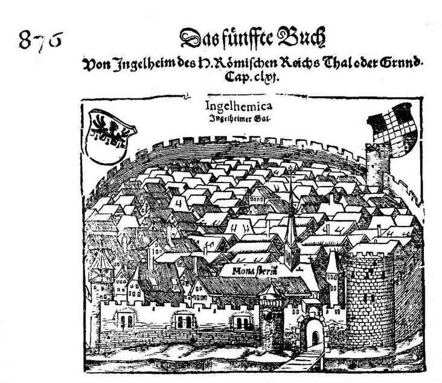
Lizenz: Public DomainEine bessere Wiedergabe dieser Zeichnung findet sich in einer weiteren digitalisierten Ausgabe (Abruf 08.09.2025 - https://nbn-resolving.org/urn:nbn:de:gbv:32-1-10042913158 - Digitale Sammlungen der Herzogin Anna Amalia Bibliothek - Klassik Stiftung Weimar) und kann dort auch als Einzelseite als pdf-Datei heruntergeladen werden.